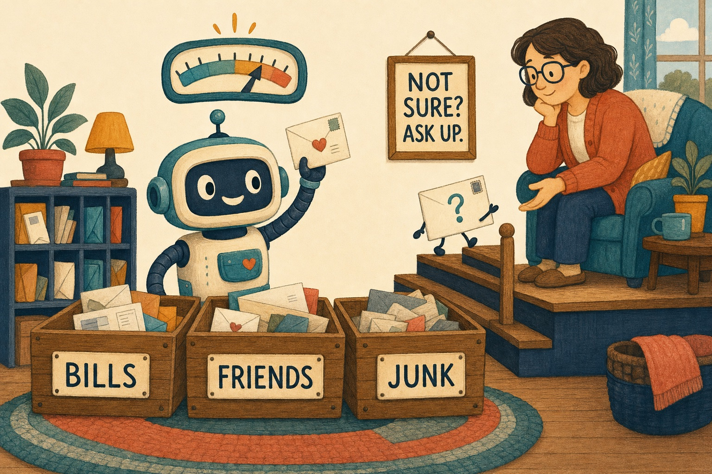

Level 0 Five minutes · no jargon
Explain like I'm five
Imagine a mailroom. Letters pour in all day. Somebody has to decide where each one goes.

Three helpers in the mailroom
1. The rule follower
Some letters are easy. If the envelope says "Electric Company," it goes in the Bills bin. Every time. You can write that rule on a card and tape it to the wall. That's code: rules you can write down. It's the fastest and cheapest helper, and it never gets tired. But it can only follow rules somebody already wrote.
2. The quick sorter
Some letters need a little judgment. "Is this from a friend, or is it junk pretending to be friendly?" No rule card covers it, but you don't need to think for an hour either. You need a quick, good guess.
That's the decision model. It's a little robot that is very good at one thing: you show it a letter and ask a question with answers already written out, like "Bills, Friends or Junk?", and it points to one. It also tells you how sure it is. "I'm 95% sure this is junk." Or "Hmm, maybe 50-50."
It doesn't write letters back. It doesn't explain itself. It just sorts, fast, and says how sure it is.
3. The grown-up upstairs
When the quick sorter isn't sure, it doesn't guess. It carries the letter upstairs to someone who can sit down and really read it. That's the big language model: slower and more expensive, but it can think through a strange letter and even write a reply.
And for the very important letters, like "should we sign this?", the grown-up asks you. You're the human. You decide what matters.
Why not just give everything to the grown-up?
Because the grown-up is slow and costs a lot. If every letter goes upstairs, the stairs get crowded and the mail piles up. In our experiments, asking the quick sorter cost about one penny for every 160 letters. Asking a big thinking model the same question costs hundreds of times more. So you send the grown-up only the letters that need one.
The best trick: teach the helpers below
Here's the secret. Every time the grown-up sorts a tricky letter, they also leave a note for the helpers downstairs. "Letters from the swim club are from Friends." Next time, the quick sorter knows, or the rule follower gets a new card. So the same tricky letter never has to climb the stairs twice.
Over time, fewer and fewer letters go upstairs. The mailroom gets faster and cheaper, and the grown-up only sees the truly new stuff.
Two little alarm bells
The quick sorter has two alarm bells it can ring:
- "I've never seen anything like this." That's novelty. The letter is strange and new. Up the stairs it goes, and the grown-up leaves a note so it's not strange next time.
- "I picked a bin, but something feels off." That's doubt. The sorter takes a second look at its own choice. When doubt is really high, it's almost always right that something is wrong.
But here's a funny thing. The sorter can only pick from the bins it's given. If someone forgot to build a Birthday Cards bin, the sorter will happily drop birthday cards in Friends and feel fine about it. Nobody rang a bell, because the problem wasn't the choice. It was the missing bin. Somebody has to check the bins themselves.
What to remember
- Use the cheapest helper that can do the job right.
- A decision model is a quick sorter that says how sure it is.
- Not sure? Ask up.
- Every time someone upstairs fixes a letter, teach the helpers downstairs.
- Check the bins, not just the sorting.
Ready for the grown-up version? Decision models 101 uses the same mailroom, with the real names: Choice, Noul, Score, state and calibrated confidence.